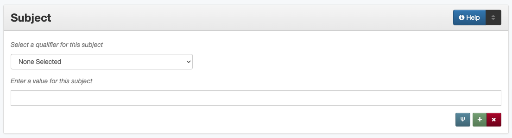

Subject
Definition
The subjects or topics that succinctly describe the content of the resource.
Where Can the Subject Information be Found?
In some cases, subjects may come from accompanying or supplementary information; generally the item must be read/examined to assign subjects and keywords, such as:
Item Types |
Information Sources |
|---|---|
For text |
|
For images |
|
For maps |
|
For music scores |
|
For videos |
|
For sound files |
|
For computer files |
|
How Subject Works in the Metadata Form
Parts:
Subject qualifier – drop-down menu
Subject – text field
- Repeatable?
Yes - to include multiple subjects, click ‘Add’ to repeat all field parts
- Required?
Yes - two subject terms are required (more information)
How Should the Subject be Filled in?
General Subject/Keyword Rules
Information in the subject field should describe what the content is “about” answering questions like: who, what, where, and when
Add as many terms as necessary to capture subject content:
Two subjects (any type) are required, but an average of five subject/keyword entries is recommended (number varies depending on content)
Avoid terms that are too general to describe a particular item
Only include geographic subjects when the particular place is significant to the content
Generally do not repeat information that is represented in other fields (e.g., material/resource type, geographic names that are identical to coverage locations)
The use of controlled vocabularies is not required (except UNTL-BS terms for items in the Portal)
Proper names can be subjects (persons, places, titles, etc.)
Follow the general formatting rules for consistency:
Use appropriate capitalization, punctuation, etc. depending on the type of subject
Terms from controlled vocabularies must use the exact formatting prescribed by the source
Choose the appropriate subject type from the controlled vocabulary
Keywords and Phrases (KWD)
Formatting Keywords
Guideline |
Examples |
|---|---|
|
puppies |
|
costumes |
|
Cretaceous geologic period |
|
long-range planning |
|
man-made lakes
manmade lakes
|
|
Romeo and Juliet |
|
clothespins |
|
quilting |
When referring to a company, organization, school, military installation, etc., the abbreviated version of the name can be used, but the full name must appear at least once in the record (e.g., the content description or subject) |
Description: Postcard of buildings
at Ft. McIntosh.
Keyword: Fort McIntosh
UNT
|
Prefer applicable controlled terms when they are readily- available (e.g., for more specific material information) |
LCGFT: Portraits
Keyword: quarterly reports
TGM: Cabinet photographs
|
Assigning Keywords
When assigning keywords, keep in mind that they should help users find the item you’re describing and also help the item be found with other, similar items
Follow all formatting guidelines (e.g., generally lowercase and plural)
Here are some suggestions:
Guideline |
Instead of: |
Consider: |
|---|---|---|
Keep keywords short – break up long, complex phrases |
ACI service awards for Austin and Dallas airports |
Airport Council International
ACI
service awards
airports
|
crude oil and petroleum products markets |
crude oil
oil products
petroleum products
fuel markets
|
|
Split up proper names and abbreviations/acronyms |
National Environmental Policy Act (NEPA) |
National Environmental Policy
Act
NEPA
|
Remove unnecessary articles |
the DREAM Act |
DREAM Act |
Reorder words to create shorter phrases, when appropriate |
disposal of waste |
waste disposal |
books in astronomy |
astronomy books |
|
Every keyword should have a noun |
horseback |
horseback riding
horseback riders
|
Add descriptors if the term is extremely vague |
processing |
data processing
grain processing
water processing
financial processing
agricultural processing
|
Named Animals (namedAnimal)
If an identified pet or other animal is visible in a photo or a primary subject of a text, the name can be added as a “Named Animal”
Guideline |
Examples |
|---|---|
Include the name exactly as written/punctuated |
Rolph
Dox Happy Rx
Bit O’Man
|
Named Persons (named_person)
‘Named persons’ refers to people who are significant in some way to the content of the item (see below for clarification)
Only include names as ‘named persons’ if a surname is known
If only a first name, first and middle names, or nickname is known:
Use the name in the content description (if relevant)
Use the name in the title (if relevant)
All names should have the same format:
Guideline |
Examples |
|---|---|
Invert the name (Last, First Middle) |
Lott, Leanna Ivory |
Use any known part of the name, including initials) if the full name is unknown |
Thompson, J. D. |
Include additional names as middle names |
Williams, Mary Deline Xenia Buchanan |
Names that are hyphenated or have multiple parts are all considered “last names” |
Smith-Jones, John
van Tyen, Jan
|
|
Steever, Col. Edgar Z.
Stolte, Hugo C., Jr.
Petersen, Mrs. P. J.
|
Nicknames can be included in parentheses at the end of the name |
Wind, Ellis (Pee Wee) |
If a person has an alternate name or alias, include their real name under “named person” and aliases as keywords |
Named Person: Cody, William Frederick
Keyword: Buffalo Bill
|
|
Named Person: Austin, Stephen F. (Stephen Fuller), 1793-1836 |
LCSH: Johnson, Lady Bird, 1912-2007
Named Person: Johnson, Claudia Alta
Taylor (Lady Bird)
|
|
If a person is identified with both a married name and a prior name, a separate named person entry for each surname may be entered, or the maiden name may be incorporated |
Buchanan, Menvil Mae
Seastrunk, Menvil Mae
Quinby, Georgianna G. Richardson
|
Should someone be a ‘named person’?
For images, the person must physically be part of the content
For text, part of the content must be “about” the person
Here are some general guidelines:
Named Person |
Not a Named Person |
Instead: |
|---|---|---|
Person definitely identified in a photograph |
Person hesitantly identified (S. M. Garvin?) |
Add name as a keyword |
Person is not physically visible in a photograph |
||
Statue or likeness of a person |
||
Plaintiff or defendant in a court case |
Person mentioned once in court transcript |
(Not included) |
Person who is the subject of an entire or significant portion of a book |
Person mentioned in a paragraph or two of a book |
(Not included) |
Author of an autobiography |
Author of texts not about themselves |
Add author as creator (or contributor) |
Personal author and addressee of a letter |
Person mentioned in passing in a letter |
(Not included) |
UNT Libraries Browse Subjects (UNTL-BS)
UNTL-BS terms are used for records in The Portal to Texas History
For records about Portal objects, include at least one subject (preferably more) from the UNT Libraries Browse Structure
Choose as many appropriate terms as necessary from the UNTL-BS list
Guideline |
Examples |
|---|---|
Terms in the UNTL browse subjects are separated by a single dash and spaces (Term - Term) |
Sports and Recreation - Riding - Bulls |
|
Social Life and Customs - Customs - Weddings |
|
Places - United States - Midwestern
Region
Places - Republic of Texas
|
Note: Additional subjects are added to the UNTL-BS when there are enough items to warrant it, so the number of subjects is consistently growing. If you would like to suggest a new subject, please notify Hannah Tarver (hannah.tarver@unt.edu).
Subjects from Other Established Thesauri or Controlled Vocabularies
The UNT Libraries schema supports a number of controlled vocabularies and encourages the use of any readily-available subjects (e.g., from established thesauri or discipline-related word lists) that would be helpful for users
Editors are never required to include terms from external controlled vocabularies
When included, the vocabulary used should be identified for each term
Do not use terms that duplicate resource types, e.g., “Photographs”
If the name of the controlled vocabulary is not in the list, choose “other” and notify the metadata administrators
Library of Congress Subject Headings (LCSH)
Guideline |
Examples |
|---|---|
|
Bee culture -- Equipment and supplies
Capote, Truman, 1924-
Fort Wolters (Tex.)
|
|
Costume -- China -- History -- Ming-Qing dynasties, 1368-1912 |
|
LCSH: Texas. Department of
Transportation -- Evaluation
LCGFT: Periodicals
LCGFT: Annual reports
|
Library of Congress Genre/Form Terms (LCGFT)
If there are relevant genre/form terms (e.g., taken from an LCSH subject string), they may be added as subjects
Note that unlike other subjects, these terms describe the physical item or type of content rather than what the item is about
Guideline |
Examples |
|---|---|
|
Blank forms |
Greeting cards |
|
Cadastral maps |
|
Handbooks and manuals |
|
Statistics |
Other Examples:
- Navy pamphlet: The Texas Navy.
UNTL-BS: Military and Wars - Wars - Texas Revolution
UNTL-BS: Military and War - Transportation - Ships
LCSH: Texas -- History, Naval
LCSH: Texas -- History -- Republic, 1836-1846
KWD: independence
KWD: battleships
KWD: schooners
KWD: naval vessels
KWD: Nimitz
- Photograph: [Look-out Tower at Fort Davis]
LCSH: New Deal, 1933-1939
LCSH: Davis Mountain State Park (Tex.)
UNTL-BS: Architecture - Civil Works
UNTL-BS: Landscape and Nature - State and National Parks
KWD: Civilian Conservation Corps
KWD: overlooks
KWD: scenery
KWD: mountains
KWD: deserts
- Photograph: Jim Goin and Mr. [Fred] Cummings. Ice delivery in Aubrey
UNTL-BS: People - Individuals
UNTL-BS: Business, Economics and Finance - Transportation - Automobiles
KWD: cars
KWD: wagons
named_person: Goin, Jim
named_person: Cummings, Mr. Fred
- Letter to Cromwell Anson Jones, 19 May 1869
UNTL-BS: People - Individuals - Mary Jones
UNTL-BS: Social Life and Customs - Correspondence
LCGFT: Personal correspondence
LCSH: Jones, Mary Smith McCrory, 1819-1907
named_person: Jones, Cromwell Anson
- Map of the Missouri, Kansas and Texas Railway
UNTL-BS: Landscape and Nature - Geography and Maps
UNTL-BS: Business, Economics and Finance - Transportation - Railroads
LCSH: Missouri, Kansas and Texas Railway
- Texian Campaigne plate
UNTL-BS: Military and War - Wars - Mexican War
UNTL-BS: Social Life and Customs - Furnishings - Dishes
NMC (Chenhall’s): Food T&E
NMC (Chenhall’s): Tools & Equipment for Materials
KWD: ceramics
KWD: plates
KWD: Texian Campaigne
- Surgical Scalpel, 19th Century
UNTL-BS: Science and Technology
OTH: Devices, Medical
KWD: surgical knife
KWD: surgical knives
- Thesis: An 8-step program: Shaping and fixed-time food delivery effects on several approximations and undesired responses in goats
LCSH: Clicker training (Animal training)
LCSH: Goats -- Training
LCSH: Operant conditioning
KWD: shaping
- Music score: Daisy: Opera in Two Acts
LCSH: Low, Juliette Gordon, 1860-1927 -- Drama
LCSH: Girl Scouts
LCSH: Operas
LCGFT: Scores
KWD: Girl Scouts of America
KWD: music
KWD: conductors
KWD: voices
KWD: instruments
- Photograph: [Portrait of Jessie Bogle Hubbard]
LCSH: Bogle family
UNTL-BS: People - Individuals
UNTL-BS: Social Life and Customs - Customs - Weddings
KWD: wedding dresses
LCGFT: Portraits
named_person: Bogle, Jessie
named_person: Hubbard, Jessie Bogle
- Architectural Drawing: Elementary School Building, Fort Stockton, Texas: Ceiling Plans
LCSH: Public schools – Designs and plans
UNTL-BS: Architecture - Buildings
UNTL-BS: Education - Schools - Buildings
AAT: elementary schools (buildings)
KWD: Fort Stockton Independent School District
Resources
UNT Subject Qualifier Controlled Vocabulary
Resources for Selected Vocabularies:
Controlled Vocabulary |
UNTL Code |
Links to Resources |
|---|---|---|
University of North Texas Libraries Browse Subjects |
UNTL-BS |
|
Art and Architecture Thesaurus (Getty) |
AAT |
|
Library of Congress (LC) |
Classification Web
(Accessible to UNT staff/students)
|
|
|
LST |
|
|
LCSH |
|
|
LCGFT |
|
|
LCMPT |
|
|
TGM |
More Guidelines:
Comments
Since the “subject and keywords” element may describe both what the object is about and the format in some cases, subject-related information may be repeated in other elements:
An image with a Resource Type “Photograph” could have a more specific subject term such as “cabinet card,” (keyword), “Panoramic photographs” (TGM), or “group portraits” (AAT)
To describe a resource, such as an autobiography, that is about its creator, place the creator’s name in both the subject/keyword element and the Creator element.
Although geographic terms are normally handled by the :doc: Coverage <coverage> (Place Name) element, subject fields could include geographic terms as well if the location is significant to the content, or if there are variant names.
When using an established controlled vocabulary, follow all rules related to scope and formatting
E.g., the scope for the LCGFT includes the following disciplines: moving images (films, television programs, and video recordings), spoken-word recorded sounds, legal materials, and cartographic materials